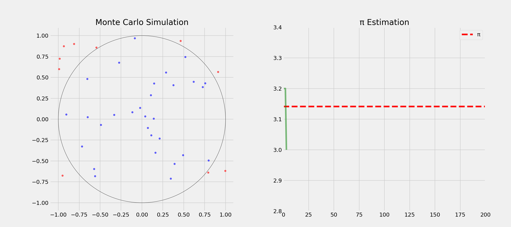
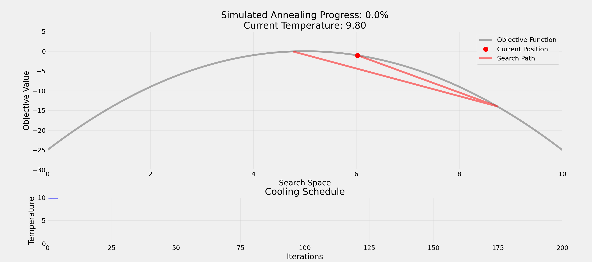

Lecture V - Randomness
Programming: Everyday Decision-Making Algorithms
Kühne Logistics University Hamburg
Welcome!
Today’s Topic: Randomness & Probabilistic Algorithms
Topic: Understanding how randomness powers algorithms and decision-making in computer science and everyday life
Why this matters: Randomness isn’t just about gambling. It’s a powerful tool that makes computers faster, cryptography secure, and helps us solve problems. Today we’ll learn how embracing uncertainty can lead to better solutions.
Today’s Agenda
- Understanding Randomness - From casinos to algorithms
- Randomness in Daily Life - Where we encounter it without realizing
- Computer Science Applications - Monte Carlo, simulated annealing, cryptography
- Decision Making - Using randomness to solve hard problems
Understanding Randomness
Randomness
Question: What comes to your mind when you think of randomness?
Casino
Lottery
Shuffling cards
Algorithms
Cryptography
Genetic mutations
Why Randomness Matters
Question: What’s the opposite of randomness?
- Determinism - same input, same output
- Predictability - knowing the outcome in advance
- Consistency - reliable patterns
- Boredom?
Discovery by Randomness
Question: How would you test if a pair of dice is fair?
- Send the dice to a lab to check weight and balance
- Roll the dice many times
- Check if the outcomes are uniformly distributed
- Compare observed frequencies to expected frequencies
Dice Rolls

Using Randomness
Randomness is a fundamental aspect of the world
- Testing: Generate random inputs to find bugs
- Optimization: Escape local optima in complex problems
- Simulation: Model complex systems with uncertainty
- Security: Make systems unpredictable to attackers
- Fairness: Eliminate bias in selection processes
Randomness is not just about generating random numbers!
Randomness in Daily Life
Randomness and Everyday Life
Question: Where do you encounter randomness in daily life?
Entertainment Industry
- Pokémon: “Random” encounters weighted by rarity
- Loot systems: Rare items have controlled drop rates
- Chess AI: Introduces randomness to feel more human-like
- Spotify shuffle: Deliberately less random to feel natural
- TikTok: Controlled randomization for content discovery
Cryptography & Security
- Cryptocurrency mining: Solving cryptographic puzzles through guessing
- Password generators: Balance randomness and memorability
correct-horse-battery-stapleis more secure thanTr0ub4dor&3- Modern encryption relies on random number generation
- Two-factor authentication uses random codes
Data Science & Research
- Weather forecasting: Uses randomness to model uncertainty
- Stock algorithms: Add randomness to avoid predictable patterns
- Self-driving cars: Random elements for natural-feeling behavior
- Random sampling: Ensures unbiased research results
- A/B testing: Random assignment to treatment groups
Randomness is everywhere around us!
Randomness and Computer Science
Randomness in Algorithms
Why do computer scientists love randomness?
- Efficiency: Often faster than deterministic approaches
- Simplicity: Can solve complex problems with simple code
- Robustness: Avoids worst-case scenarios
- Approximation: “Good enough” solutions in reasonable time
Key Trade-off: Perfect vs. “Good Enough” solutions
Types of Randomness
Question: Difference between true and pseudo-randomness?
True Randomness
- Physical phenomena
- Atmospheric noise
- Radioactive decay
- Quantum effects
Pseudo-randomness
- Deterministic algorithms
- Seed-based generation
- Repeatable sequences
- Good enough for most uses
Limits of Computation
Question: How many possible combinations exist in a shuffled deck of cards?
80658175170943878571660636856403766975289505440883277824000000000000Computing and evaluating all possible combinations is not feasible!
Computational Limits
Question: Anybody ever heard of “Monte Carlo methods”?
- Developed in the 1940s for nuclear weapons research
- Nuclear fission chain reactions were too complex
- Helped to evaluate the probabilities of different outcomes
- Named after Monaco’s famous casino
Question: How could we estimate π?
Estimating π

Decision Making
Travel Itinerary
Question: How and in which order would you visit 10 cities by plane with minimal total distance?
3628800Question: What could be a strategy?
Brute Force
- Try every possibility
- Total possible routes: 10! = 3,628,800
- Guaranteed to find best solution
- If each check takes 1ms: 1 hour to check all routes
Question: What could be the problem with this approach?
Time and Space Requirements
- For 20 cities: 20! = 2.4 quintillion routes
- Would take 77 billion years at 1ms per check!
- Time complexity grows factorially
- Memory requirements increase with problem size
Not feasible for real-world problems!
Greedy Algorithm
- Example: Always picking shortest next flight
- Make locally optimal choices at each step
- Never backtracks or reconsiders past decisions
- Fast execution & simple to implement
- Can perform poorly on complex problems
Hill Climbing
- Iteratively improve solution by making small changes
- Like climbing in fog, can only see immediate surroundings
- Don’t know if higher peaks exist elsewhere
- Can get stuck in local optima
- No guarantee of finding global best optima
Question: How would you escape a local optimum?
Simulated Annealing (SA)
- Make random changes and accept improvements
- Sometimes accept worse solutions
- Gradually become more selective
Question: Why accept worse solutions sometimes?
- Randomness helps to escape local optima
- Balances exploration vs. exploitation
SA Animation

Traveling Salesman

Randomness and Society
Thought Experiment
What’s more important for a society?
Freedom
- Individual choice
- Personal responsibility
- Market-driven
Equality
- Shared resources
- Social safety nets
- Regulated systems
Question: Any problem with this question?
Veil of Ignorance
You might randomly be:
- Any gender identity and economic status
- Any health condition and intelligence level
- Any cultural background and religious belief
Question: If you didn’t know who you’d be born as, what kind of society would you design?
Key Considerations
- Individual stories: Powerful but potentially misleading
- Statistics: Comprehensive but can miss nuance
- Hidden diversity: Important subgroups may be overlooked
- Small policy changes can have cascading effects
But that’s not all! We also need to measure success and failure!
Measuring Success
- Mean happiness: Average well-being
- Total happiness: Utilitarian approach
- Median happiness: Focus on the middle class
- Minimum happiness: Protecting the most vulnerable
Question: What could be the problem with these measures?
Idea: Random Sampling
- Randomly select a subset of the population
- Gather diverse perspectives from the sample
- Better understand needs of population
- Reduce selection bias and improve accuracy
Question: What is a selection bias?
Selection Bias
Definition: Selection bias occurs when the sample data you’re analyzing isn’t truly representative of the population you’re trying to study.
Famous Example
During WWII, engineers studied returning planes to determine where to add armor. Initially, they focused on areas with most bullet holes. Abraham Wald pointed out they should instead armor the areas with no bullet holes - those were the critical areas where planes didn’t survive to return!
Promoting Fairness
Question: How can randomness promote fairness?
- Random allocation of patients in clinical trials
- Random audits for tax compliance
- Random assignment of cases to judges
- Random order of candidates on voting ballots
Uncertainty
Quick Poll
Question: Which would you prefer?
- 100% chance of winning 50 EUR
- 50% chance of winning 120 EUR
Answer depends on your risk aversion!
Decisions Under Uncertainty
Question: When should we embrace vs. reduce randomness?
Embrace When:
- Exploring new solutions
- Avoiding bias
- Breaking deadlocks
- Testing systems
Reduce When:
- Safety-critical systems
- Financial transactions
- Medical procedures
- Legal proceedings
Takeaways
“Good Enough” Solutions
- Perfect is enemy of good
- Remember Monte Carlo methods: approximations work
- Complete analysis often impossible
- Perfect information is rare
Many real-world problems benefit from embracing uncertainty rather than fighting it!
Opportunity Costs
- Consider opportunity costs
- Quick approximations enable faster decisions
- Balance accuracy vs. computation time
- Random sampling vs. complete enumeration
Many problems benefit from fast, good-enough solutions rather than perfect ones.
Any questions
so far?
After the break — Randomness
- Programming session in our new notebooks
- How to translate the idea into code and experiments
- Different scheduling algorithms applied to problems
That’s it for today’s lecture!
We’ve covered the basics of randomness and its applications. In the upcoming tutorials, we’ll learn how to use LLMs to generate code with randomness.
Literature
Interesting literature to start
- Christian, B., & Griffiths, T. (2016). Algorithms to live by: the computer science of human decisions. First international edition. New York, Henry Holt and Company.1
Books on Programming
- Downey, A. B. (2024). Think Python: How to think like a computer scientist (Third edition). O’Reilly. Here
- Elter, S. (2021). Schrödinger programmiert Python: Das etwas andere Fachbuch (1. Auflage). Rheinwerk Verlag.
Think Python is a great book to start with. It’s available online for free. Schrödinger Programmiert Python is a great alternative for German students, as it is a very playful introduction to programming with lots of examples.
More Literature
For more interesting literature, take a look at the literature list of this course.
Lecture V - Randomness | Dr. Tobias Vlćek | Home
Social Life